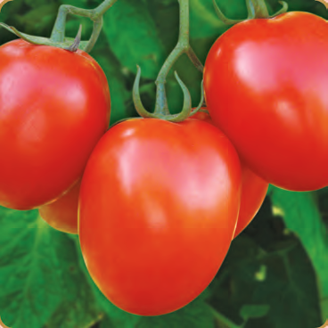

| Morphological Characters | |
|---|---|
| Plant Habit | Semi Determiate |
| Fruit Colour | Red |
| Fruit Shape | Square round |
| Avg. Fruit Weight | 85 - 90 gms. |
| Firmness | Very firm |
| Special Features | Vigorous plant typ, ToLCV & high heat tolerance High bearing, high yielding Excellent keeping quality Sutable for long distance transportation |